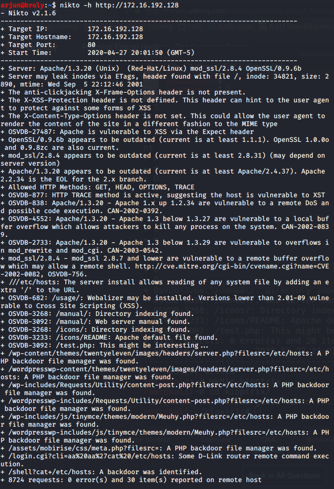

If port 80 or 443 is open, then you will be able to connect to server via web browser
nikto- Good for beginner
- If website is running good security, it will autoblock it if it detects it
Example:

Dirbuster:

Can add more file extension based upon recon you found earlier